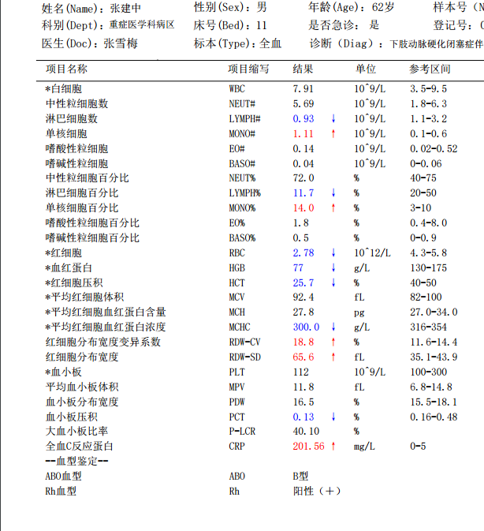
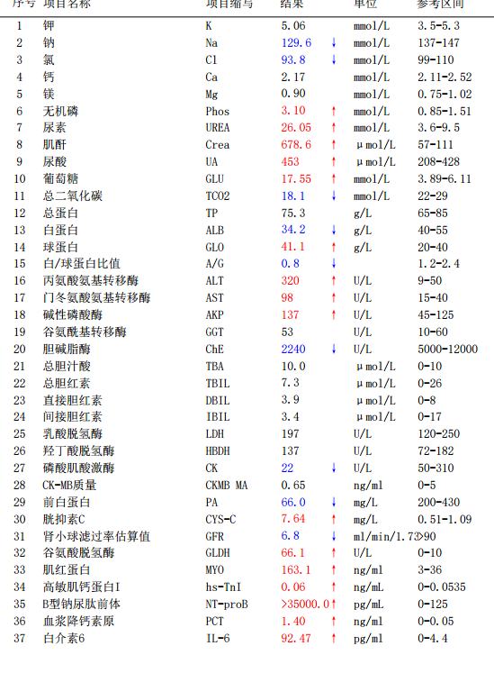
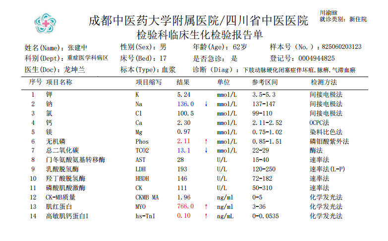
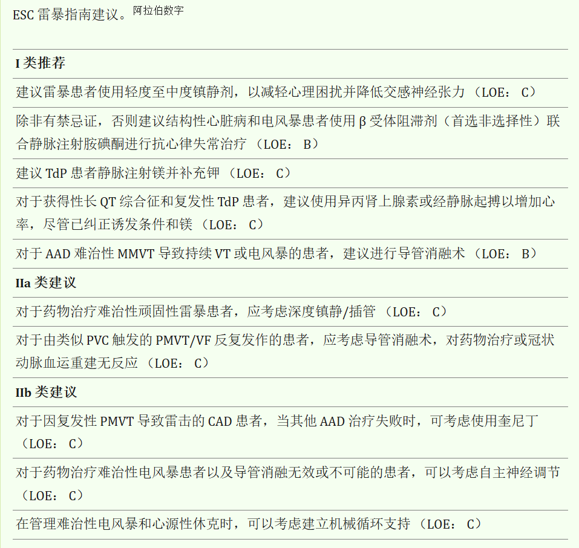

张建中，男性，62岁，因"双下肢疼痛3月，溃疡2月"拟双下肢动脉硬化闭塞症伴坏疽2025-05-27收入血管外科。
基础疾病：高血压20年（未服药）· 糖尿病20年（瑞格列奈）· 慢性肾衰竭3年（规律透析）
入院心超：左室壁运动欠协调、心尖部搏幅稍减低。ECG：不定型室内阻滞伴ST-T改变。BNP前体＞35000，TnI 0.143
心超：左室壁运动欠协调、心尖部搏幅稍减低。EF 51%
ECG：不定型室内阻滞伴ST-T改变，ST段：II、III、avF、V5、V6压低≥0.05mV
BNP前体＞35000，TnI 0.143
心血管二科会诊：
慢性心力衰竭（射血分数保留型，EF51%）心功能II~III级
高血压性心脏病 · 可疑冠心病——建议冠脉造影
控制入量＜1500ml/d · 目标BP＜130/80mmHg
实验室：Cr 568μmol/L · BUN 18mmol/L · ALT 736U/L · AST 698U/L · D-Dimer 1.4
头胸腹CT（2025-05-27）：
• 双侧基底节区腔隙性脑梗塞 · 脑萎缩 · 双侧颈内/椎动脉钙化
• 慢支炎、肺气肿 · 双肺散在小结节（中低危）
• 心脏增大 · 主动脉及冠状动脉多发钙化
• 双肾萎缩并多发囊肿 · 左侧肾上腺增粗
• 双侧胸膜腔少量积液 · 肝内小钙化灶
2025-05-28 下肢动脉造影：
右侧髂外动脉多处中-重度狭窄，右股浅动脉起始部纤细→以下闭塞，股深动脉代偿
左侧股浅动脉上段纤细→以下闭塞
2025-05-30 冠脉造影：
LAD近-中段最重60%狭窄 · LCX中段最重60%狭窄
RCA近-中段最重75%狭窄，中远段最重99%次全闭塞，TIMI 1级
有冠脉手术指征
2025-05-30 14:36 转入ICU · 16:00 PCI（旋磨+PTCA）
入ICU后完善相关检查：



药物治疗：头孢呋辛 · 法莫替丁 · 多烯磷脂酰胆碱
CRRT · 吲哚布芬+氯吡格雷双抗 · 普伐他汀
沙库巴曲缬沙坦 · 右美托咪定+氟哌啶醇镇静
2025-05-31 17:30 患者不配合，强行转出
2025-06-02 早上查房：神志嗜睡，精神差。神内会诊诊断：代谢性脑病？
2025-06-02 13:00 透析前突发意识丧失
右侧瞳孔散大(5mm) vs 左侧(3mm)，光反应迟钝
约2分钟后呼之可应，无抽搐凝视
讨论：意识障碍，应做如何诊断？
神内会诊：意识丧失待查：癫痫？建议复查头CT、排除心脏病变
再次转入ICU
入科诊断：意识障碍原因待查（完整诊断20项）
2025-06-02 15:14 突发呼之不应，面色苍白，四肢厥冷
BP/SpO₂测不出 HR 250bpm ECG示：室颤
抢救经过：
CPR · 肾上腺素1mg · 双向同步电除颤200J
恢复窦律后反复室颤7次（15:14-16:00）
反复CPR+电除颤+肾上腺素+利多卡因+胺碘酮+硫酸镁+极化液
气管插管+有创呼吸机 · 床旁CRRT
18:50、21:04 再次室颤，CPR+电除颤后恢复
24h动态心电图：室速172阵（最快247bpm）· 室早4566次 · 最长RR 1.724s
抢救期间关键检验（16:45）：

▸ 完整20项入科诊断
1.意识障碍原因待查 · 2.双下肢动脉硬化闭塞症伴坏疽 · 3.冠状动脉粥样硬化性心脏病三支病变（LAD/LCX/RCA） · 4.慢性肾衰竭 肾性贫血 · 5.血液透析状态 · 6.高血压 高血压性心脏病 · 7.2型糖尿病 · 8.2型糖尿病伴多个并发症 · 9.2型糖尿病足病 · 10.肝功能不全 · 11.肝钙化灶 · 12.慢性心力衰竭（EF51%）心功能Ⅱ-Ⅲ级 · 13.双侧基底节区/侧脑室旁腔隙性脑梗塞 · 14.脑萎缩 · 15.双侧颈内动脉钙化 · 16.双侧椎动脉钙化 · 17.慢性支气管炎伴肺气肿 · 18.双肺少许纤维灶及炎性灶 · 19.双肺散在少许实性/磨玻璃样小结节（中低危） · 20.双侧胸膜腔少量积液
心内科会诊意见：
补充诊断：频发室性期前收缩
艾司洛尔+胺碘酮泵入防电风暴
纠正电解质紊乱（K⁺维持在4.5-5.0mmol/L）
病情稳定后择期冠脉支架+ICD植入
06-03 停利多卡因后频发室早二联律，加用后消失
06-04 QT间期延长，停用胺碘酮
06-05 富马酸比索洛尔2.5mg · 拔除气管插管
06-08 转入普通病房
06-12 出院
一种危及生命的心脏电不稳定状态，特征为短时间内反复发作的持续性室性心律失常
临床标准：24h内出现≥3次持续性室性心律失常（含ICD放电），每次间隔≥5min
多为单形性室速（MMVT），也可为多形性室速（PMVT）和室颤（VF）
Jentzer JC, J Am Coll Cardiol. 2023;81(22):2189-2206
77%-94%的ES患者存在基础结构性心脏病（多为晚期心肌病）
危险因素：
LVEF降低 · 高龄 · QRS波时限延长
未接受规范GDMT · 慢性肾脏病
既往室性心律失常史（尤其单形性室速为首发心律）
Jentzer JC, J Am Coll Cardiol. 2023;81(22):2189-2206
在存在解剖/电学异常基质（心肌瘢痕）的个体中：
触发因素（缺血、炎症、血流动力学失代偿、药物、电解质紊乱）
⟶ 自主神经失衡 ⟶ 持续性室性心律失常
① 折返机制（reentry）
② 后除极触发活动（after depolarizations）
③ 持续化恶性循环：触发因素+交感过度激活→VA反复→电风暴
Jentzer JC, J Am Coll Cardiol. 2023;81(22):2189-2206
初始评估：评估心律失常 · 识别触发因素 · 了解心脏基质 · 血流动力学 · 风险分层
高风险VA特征：
VF/PMVT · 更快心室率 · 频繁/持续VA发作
退化为VF倾向 · ICD治疗失败 · 短偶联PVC触发
从ICD询问和遥测中获取VA发作频率/持续时间信息
连续12导联ECG监测
Jentzer JC, J Am Coll Cardiol. 2023;81(22):2189-2206
潜在触发因素：
心肌缺血 · 心力衰竭/容量过负荷 · 发热
药物毒性/QT延长 · 交感/副交感失衡
非心脏器官衰竭 · 甲状腺毒症
电解质紊乱（低/高K⁺ · 低Mg²⁺）
初始实验室：电解质 · 乳酸 · 肾/肝/甲状腺功能 · 心脏标志物
已确诊CAD/ICM患者必须排除心肌缺血
Jentzer JC, J Am Coll Cardiol. 2023;81(22):2189-2206

Jentzer JC, J Am Coll Cardiol. 2023;81(22):2189-2206